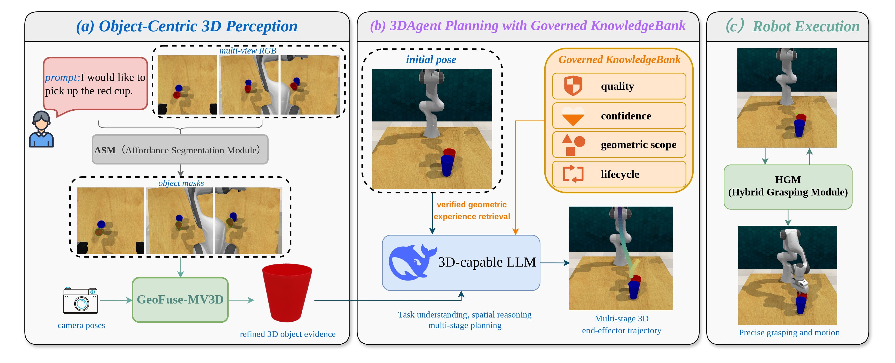
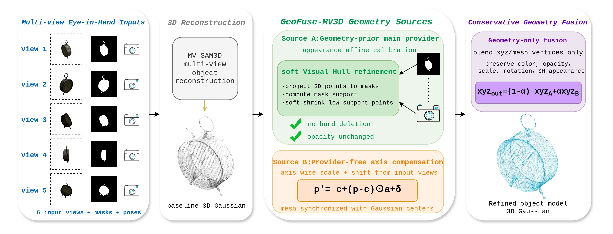
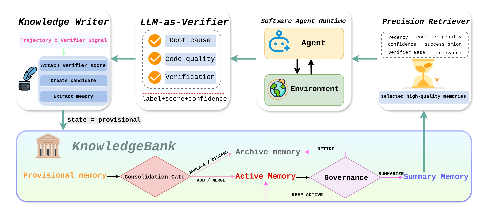
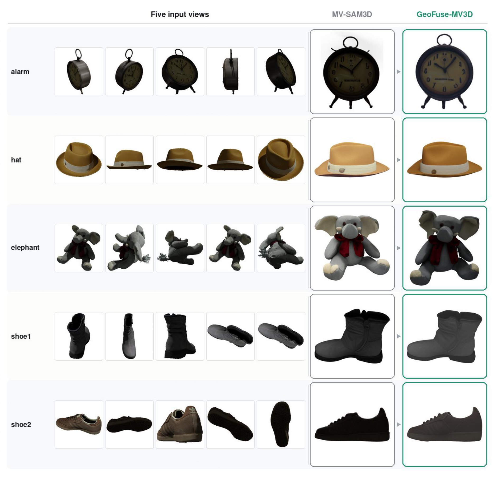
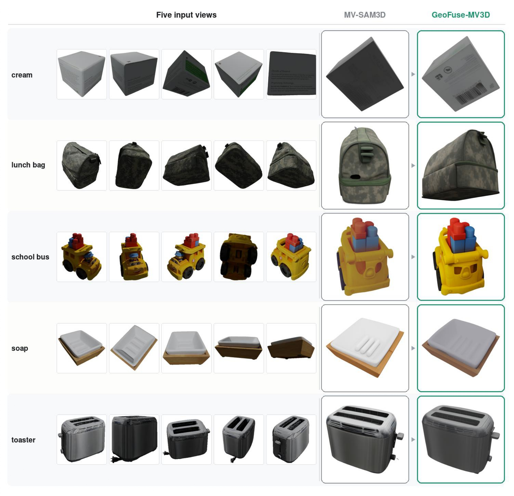

Abstract: Generalist vision-language-action systems need object-centric 3D evidence and reusable manipulation experience to plan reliable robot trajectories. GeneralVLA provides a hierarchical interface for converting language and RGB-D observations into 3D end-effector paths, but two bottlenecks remain. First, monocular SAM3D-style object reconstruction can hallucinate pose and unseen geometry, while manipulation benefits from stable object shape when calibrated multi-view observations are available. Second, the original KnowledgeBank mainly retrieves semantically similar snippets and appends new knowledge, which makes it difficult to control memory quality, conflicts, confidence, and geometric relevance. To address the first challenge, we introduce GeoFuse-MV3D, a geometry-prior-guided MV-SAM3D reconstruction branch that verifies external geometry cues with input-view masks, applies soft visual-hull support, performs axis-wise refinement, and fuses only geometry while preserving appearance. To address the second challenge, we upgrade KnowledgeBank into a governed long-term memory system with explicit quality, confidence, lifecycle, verifier, and conflict metadata, together with precision-oriented retrieval. Finally, we evaluate the reconstruction branch on GSO-30 and the memory module on Terminal-Bench 2.0 and SWE-Bench Verified; GeoFuse-MV3D improves over the MV-SAM3D baseline by reducing CD and LPIPS by 2.20% and 2.02% while increasing PSNR and SSIM by 2.36% and 1.03%, and KnowledgeBank improves over ReasoningBank by 4.53% on Terminal-Bench SR and 3.73% on SWE-Bench resolve rate, while reducing AS by 4.95% and 5.65%, respectively.





@article{wang2026generalvla2,
title={GeneralVLA-2: Geometry-Aware Reconstruction and Governed Memory for Robot Planning},
author={Wang, Haoyu and Ma, Guoqing and Zhang, Zeyu and Guo, Yandong and Shi, Boxin and Tang, Hao},
journal={arXiv preprint arXiv:2606.17480},
year={2026}
}